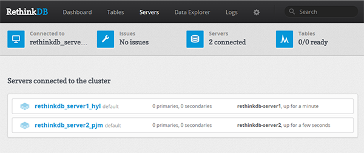
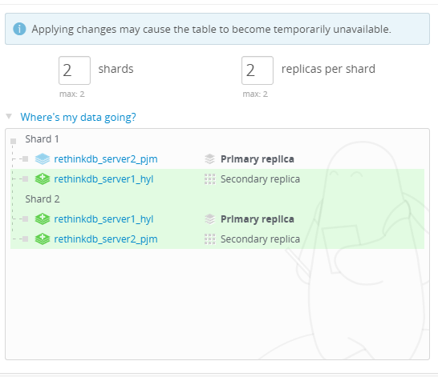

Setting up a sharded RethinkDB cluster on Arch Linux, NoSQL, scaling
Set Up a Sharded RethinkDB Cluster - Arch Linux
Difficulty: 3
Time: 20 minutes
RethinkDB, a NoSQL database, is the first open-source, scalable JSON database built from the ground up for real-time web applications. It's designed specifically to push data to applications in real time, dramatically reducing the time and effort necessary to build scalable real-time applications. In this article, we'll help you build a RethinkDB cluster, import a database onto it, and make it secure.
For these tasks, you'll need two servers running Arch Linux, named rethinkdb_server1 and rethinkdb_server2. For optimal security, set up a sudo user for each RethinkDB server.
Set up a RethinkDB node
RethinkDB cluster is a type of peer-to-peer network. The primary step in building a RethinkDB cluster is to install RethinkDB on every server included in this cluster.
- Update the repository.
sudo pacman -Sy
- Install RethinkDB.
sudo pacman -S rethinkdb
- Configure RethinkDB to run on startup. (Perform this step on rethinkdb_server1.)
sudo cp /etc/rethinkdb/instances.d/default.conf /etc/rethinkdb/instances.d/cluster_instance.conf
sudo vim /etc/rethinkdb/instances.d/cluster_instance.conf
- Change the server name as follows:
Search for:
server-name=server
This line is commented, Add following line beneath it.
Server-name=rethinkdb_server1
For other servers use rethinkdb_server2, rethinkdb_server3 and so on.
- Set up the bind address.
By default the bind address is accessible only on the localhost (127.0.0.1). Change this address to all to make it listen on all network interfaces.
Search for:
bind=127.0.0.1
This line is commented, Add following line beneath it.
bind=all
- Save the configuration changes made on the file
/etc/rethinkdb/instances.d/cluster_instance.conf.
Enable and start RethinkDB
- Enable the default RethinkDB instance as:
sudo systemctl enable rethinkdb@cluster_instance
The @ sign means that they are instances of a template unit. In Arch Linux, you need to start RethinkDB with its respective instance. This is how RethinkDB looks in the systemd service.
ls -l /usr/lib/systemd/system | grep rethinkdb
It will display:
-rw-r--r-- 1 root root 260 Aug 19 23:07 rethinkdb@.service
Here, the @ sign specifies that RethinkDB has a template unit as its instance. Generally, while installing RethinkDB, it creates a default configuration file /etc/rethinkdb/instance.d/default.conf in the instance.d directory.
- Start the RethinkDB service.
sudo systemctl start rethinkdb@cluster_instance
sudo ps aux | grep rethinkdb
sudo netstat -tulnp | grep rethinkdb
tcp6 0 0 :::28015 :::* LISTEN 484/rethinkdb
tcp6 0 0 :::8080 :::* LISTEN 484/rethinkdb
tcp6 0 0 :::29015 :::* LISTEN 484/rethinkdb
-
Access your server at http://public_ip_of_your_server_or_domain_name:8080.
Secure the RethinkDB cluster
When RethinkDB is configured to listen on all network interfaces (bind=all), it's exposed to outside networks and presents a security threat. To make RethinkDB accessible only from authorized computers, the cluster ports need to be configured. For this, perform the following steps on both RethinkDB servers.
- Configure the ports for the web management console.
sudo iptables -A INPUT -i eth0 -p tcp --dport 8080 -j DROP
sudo iptables -I INPUT -i eth0 -s 127.0.0.1 -p tcp --dport 8080 -j ACCEPT
- Configure the driver port.
sudo iptables -A INPUT -i eth0 -p tcp --dport 28015 -j DROP
sudo iptables -I INPUT -i eth0 -s 127.0.0.1 -p tcp --dport 28015 -j ACCEPT
- Configure the cluster port.
sudo iptables -A INPUT -i eth0 -p tcp --dport 29015 -j DROP
sudo iptables -I INPUT -i eth0 -s 127.0.0.1 -p tcp --dport 29015 -j ACCEPT
- Save
iptables rules. In Arch Linux, iptables is managed as a system service. To start iptables, the /etc/iptables/iptables.rules file is mandatory. This file is not created by default, so to save the iptables rules, perform the following steps:
sudo touch /etc/iptables/iptables.rules
sudo cp /etc/iptables/empty.rules /etc/iptables/iptables.rules
sudo iptables-save > /etc/iptables/iptables.rules
- If you get a "permission denied" error while saving the rules, grant the following permission and save the rules. Linux does not allow a file to be created with execution permissions by default. The default execution permissions are 777 for directories and 666 for files.
sudo chmod 666 /etc/iptables/iptables.rules
sudo iptables-save > /etc/iptables/iptables.rules
To view the rules you can use the sudo iptables -L command.
Set up a management user
Set up SSH tunnels to access RethinkDB's web management console and the driver interface securely.
- Create a management user for SSH tunnel in rethinkdb_server1 .
sudo useradd sshuser
- Set password.
sudo passwd sshuser
- Edit sudoers.
sudo visudo
- Search for following line.
root ALL=(ALL) ALL
- Add the following line beneath it.
sshuser ALL=(ALL) ALL
-
Save and close the file by pressing the Esc key, and then typing :wq, followd by the Enter key.
-
Switch to the
sshuser.
sudo -su sshuser
- Set up the authorized keys file for a new user.
cd /home/
sudo mkdir sshuser
sudo mkdir /home/sshuser/.ssh
sudo chown -R sshuser:sshuser /home/sshuser/
sudo touch /home/sshuser/.ssh/authorized_keys
-
Generate public key:
cd /home/sshuser/.ssh
ssh-keygen
when prompted for location of the file, enter /home/sshuser/.ssh/id_rsa
- Copy the user public key.
sudo vim /home/sshuser/.ssh/id_rsa.pub
Copy the public key and close the file.
- Open
authorized_keys for editing.
sudo vim /home/sshuser/.ssh/authorized_keys
Paste the user public key into this file.
- Repeat the above steps to create rethinkdb_server2 nodes.
Create a cluster
To create a cluster, you need to allow all cluster machines to be accessed through each other’s firewall. The following steps would allow interaction among different nodes through the server firewalls.
- Add an
iptables rule on the rethinkdb_server1 server to allow all other servers to connect to the cluster port through the firewall.
sudo iptables -I INPUT -i eth0 -s rethinkdb_server1 -p tcp --dport 29015 -j ACCEPT
- Repeat the same command on the node rethinkdb_server2 by replacing the IP address value. Now save the firewall changes.
sudo iptables-save > /etc/iptables/iptables.rules
- Repeat these steps for your other server.
- Once ports are opened and servers are able to communicate to one another, you can connect the other server to create a cluster. For that, first access the rethinkdb_server2 server and install RethinkDB on the server. You can verify the steps in Step 1 to perform installation. Now to edit the configuration file, perform the following steps:
sudo vim /etc/rethinkdb/instances.d/cluster_instance.conf
- Locate the
join statement in the file.
join=coolexample.com:29015
bind=127.0.0.1
Replace it with the following lines of code:
join=rethinkdb_server1_ip:29015
bind=all
- Save the configuration file, and then restart RethinkDB.
sudo systemctl enable rethinkdb@cluster_instance
sudo systemctl start rethinkdb@cluster_instance
-
Perform the same steps for other servers. The first node, rethinkdb_server1, does not need a join statement as you are joining other servers to rethinkdb_server1.
After completing this step, you have all servers joined to rethinkdb_server1 and have a fully functioning RethinkDB cluster.

Install Python driver and RethinkDB module
- Install the Python driver on the connecting server (rethinkdb_server2). To install the Python virtual environment and package manager (pip), use the following command:
sudo pacman -S python2-virtualenv
sudo pacman -S python2-pip
- Create a directory named rethink in the user home directory.
cd
mkdir rethink
cd rethink
- Create the new virtual environment structure.
virtualenv2 venv
- Activate this environment before starting Python.
source venv/bin/activate
- Install the RethinkDB module.
pip install rethinkdb
- Start Python from the connecting server.
python
- Connect to the cluster server database. Make sure to provide the correct port, which you used earlier to connect to the SSH tunnel.
import rethinkdb as r
r.connect("localhost", 28015).repl()
- Create the database named article and table named posts.
r.db_create("article").run()
r.db("article").table_create("posts").run()
- Insert data into the table posts.
r.db("article").table("posts").insert({"hello":"world"}).run()
After you insert values, you can view the complete table in the RethinkDB web management console.
- Print the contents in a table.
c = r.db("article").table("posts").run()
for x in c:
print x
-
Exit the python shell.
exit()
Sharding
RethinkDB allows you to shard and replicate your cluster on a per-table basis. You can control the sharding settings through the web management console.
When using the web management console, you can perform sharding simply by specifying the number of shards you want and, based on the data available, RethinkDB will determine the best split points to maintain balanced shards.
To shard your data:
- Go to the table view (Tables > table name).
- Click the Reconfigure button.
- Set the number of shards and replicas you want.
- Click the Apply Configuration button.
In addition to the options in the web management console, ReQL commands for table configuration allow both scripting capability and replication, distributing replicas for individual tables across user-defined groups of servers using server tags. All these functionalities can be achieved through ReQL commands.
There are three primary commands for changing sharding and replication in ReQL:
table_create : Specify initial values of shards and replicas.
reconfigure : Change the values of shards and replicas.
rebalance : Used to rebalance table shards.

Advanced configuration
The following describes advanced configuration that cannot be performed through the web interface.
Server tag
All servers in a RethinkDB cluster may be given zero or more tags that can be used in table configurations. This is used to map replicas to servers specified by tags. You can set a tag through the following command:
rethinkdb --server-tag us --server-tag us_west
If no tags are specified on startup, the server will start with the default tag (default). When servers are tagged, you can use the tags in the reconfigure command.
If you want to assign three replicas of the user's table to us_1 and two to us_2, use the following command:
r.table('users').reconfigure(shards=2, replicas={'us_1':3,
'us_2':2}, primary_replica_tag='us_2').run(conn)
Write acknowledgements and durability
Write acknowledgements and write durability are two other settings that can't be configured or managed through the web management console or reconfigure command. They can be configured only by editing table table_config for each individual table.
The write acknowledgement setting for a table controls when the cluster acknowledges a write request as completed. There are two possible settings:
majority: The cluster sends the acknowledgement when the majority of replicas have acknowledged it. This is the default.
single: The cluster sends the acknowledgement when any replica has acknowledged it.
Below is an example:
r.db('rethinkdb').table('table_config').get(
'31c92680-f70c-4a4b-a49e-b238eb12c023').update(
{"write_acks": "single"}).run(conn)
The durability setting for a table controls when writes are committed. They include both hard and soft mode:
- In hard mode, writes are committed to disk before acknowledgements are sent.
- In soft mode, writes are acknowledged immediately upon receipt. This is much faster.
Conclusion
In this article, you learned the configuration of a sharded RethinkDB cluster on Arch Linux servers.